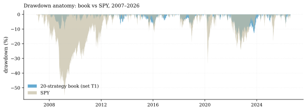
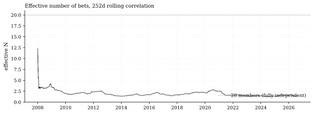
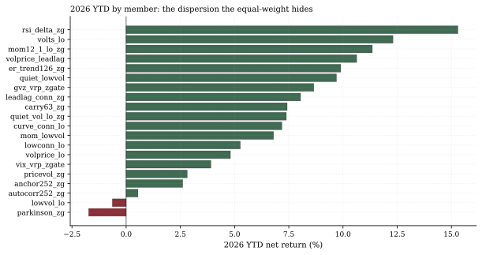

The one-paragraph version. The equal-weight 20-strategy book runs a full-sample net Sharpe of 1.09 — above every individual member (best single: 0.95). That gain is real, and it is all diversification math. But the same math that produces it says the book is much less diversified than the count suggests: mean pairwise correlation 0.50, an effective number of bets that has averaged 1.9 since 2007 and sits at 1.4 today. If you think you own twenty strategies, you own roughly two — and this note shows you exactly which two.
How we worked this problem
We take the 20 certified net-of-cost return streams and ask the question a CIO should: how many independent risk sources am I actually paying for? Tools: the full correlation matrix, single-linkage clustering (with its chaining caveat disclosed), and an equal-volatility effective-N approximation. The external anchor is Meucci's effective-number-of-bets framework — ours is the simple equal-vol version of it, and we say so.
The data audit
| # | Source | Coverage | As-of | Notes |
|---|---|---|---|---|
| 1 | Library registry (20 members, final metrics) | JSON, frozen battery | 2026-08-14 | Sharpe 0.66–0.95 per member |
| 2 | Library net T1 return streams | 4,934 sessions, 2007-01-04 → | 2026-08-14 | Net of realistic frictions |
| 3 | 20×20 correlation matrix | Frozen with battery | 2026-08-14 | Full-sample |
| 4 | 16-ETF daily panel (SPY benchmark) | 4,935 sessions, 2007-01-03 → | 2026-08-14 | Drawdown comparison |
The exhibits
The gain is real. Equal-weight book (as of Aug 14): Sharpe 1.09, 6.9% annualized vol, max drawdown −18.5% (bottomed 2022-10-14) versus SPY's −55.2%. 2026: +6.25% net, worst drawdown −6.3%, worst day −1.83%. The book adds +0.14 Sharpe over its best member — diversification paying a wage.

The catch is the correlation. Mean pairwise correlation 0.50; 51 of 190 pairs above 0.60; 14 above 0.70; the tightest pair (lowvol_lo / parkinson_zg, 0.755) is the one already disclosed at certification. At a 0.60 single-linkage threshold all twenty members chain into one cluster — that is partly the chaining artifact, but it flags the truth: there is no clean partition into independent sub-books.
Effective N: the number that matters. Equal-vol effective N (N/(1+(N−1)ρ̄) on 252-day rolling correlations): average 1.9, minimum 1.26 (Jun 7, 2024), 1.43 as of Aug 14. A book of two imperfectly correlated bets with 20 ticker labels. One reconciliation: our market-vitals engine reads effective N of 3.09 on the 16-ETF price universe — a different object (prices, not these strategy streams); the library's own streams are more correlated than their underlying assets because the battery selects for what survived.

2026 dispersion hides under the average. Eighteen of twenty members positive YTD, but the spread is 17.0 points: rsi_delta_zg +15.3% at the top, parkinson_zg −1.7% at the bottom. Style is doing real work within the two-bet structure.

So what — opportunities
- The book still earns. Sharpe 1.09 net at 6.9% vol with a −18.5% worst drawdown across two full cycles is the platform's core deliverable — the honest version of the pitch includes "two bets" in the same breath.
- The next marginal member should be chosen by correlation, not Sharpe. With eff-N at 1.4, a 0.6-Sharpe stream uncorrelated to the book adds more than a 0.9-Sharpe stream at ρ=0.5. That is a search directive for the research queue.
So what — risks
- Two bets can have one bad year together. The 2022 drawdown (−18.5%) is what a correlated two-bet book does when its shared equity/vol factor turns; sizing should assume eff-N ≈ 2, not 20.
- Concentration is cyclical. Eff-N was 1.95 on average but bottomed at 1.26 in mid-2024 — diversification evaporates exactly in stressed, correlated tapes.
Machinery
All numbers: analysis.py → assets/numbers.json, regenerated from house data in a single run before publication.
Limitations
Equal-vol effective-N is an approximation of Meucci's torsion-based ENB (disclosed); full-sample correlation matrix is the frozen certification artifact; library streams are net T1 on a 16-ETF daily universe — capacity and AUM scaling are documented separately in STRATEGY_LIBRARY.md; single-linkage clustering overstates connectedness (chaining).
Sources — external reading list
| Claim | Source |
|---|---|
| Effective Number of Bets framework | Meucci, (Re)Defining and Managing Diversification |
| ENB intuition and computation | portfoliooptimizer.io explainer |
Internal sources: the four lineage rows above. Not investment advice.
library net T1 streams; correlation clustering; effective-N (equal-vol); market vitals (price-universe eff-N)